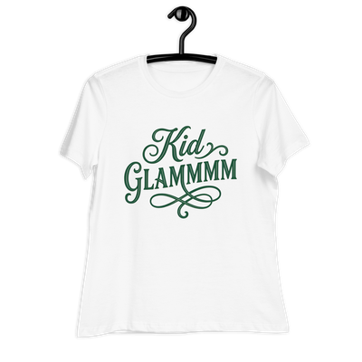

OFFICIAL T-SHIRTS
Get your official Kid GLAMMMM T-shirt to show your support to the boys. For a kind donation of $50, it can be yours. Just let me know your size (S,M,L,XL,2XL,3XL) and I'll get it on its way.
About the T-Shirt
Women's Relaxed T-Shirt | Bella + Canvas 6400
The Bella + Canvas 6400 is a relaxed-fit t-shirt designed for everyday wear. It’s made from Airlume combed cotton with side seams for structure and shape retention. The smooth fabric gives your prints an extra pop. Choose this tee as a laid-back, stylish addition to your women’s collection.
- 100% combed and ring-spun cotton
- Heather Prism Lilac & Heather Prism Natural are 99% combed and ring-spun cotton, 1% polyester
- Athletic Heather is 90% combed and ring-spun cotton, 10% polyester
- Other Heather colors are 52% combed and ring-spun cotton, 48% polyester
- Fabric weight: 4.2 oz/y² (142 g/m²)
- Relaxed fit
- Pre-shrunk fabric
- Side-seamed construction
- Crew neck
- Blank product sourced from Nicaragua, Honduras, or the US
This product is made on demand. No minimums.